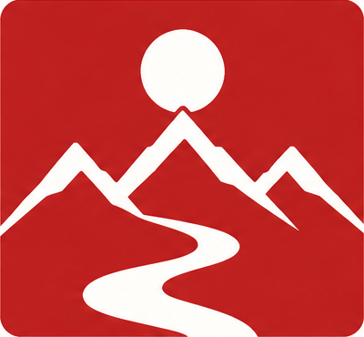
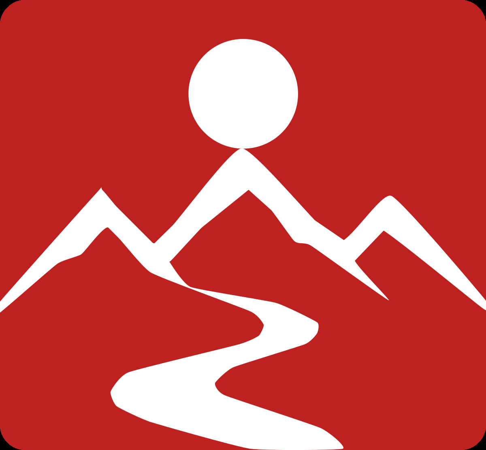
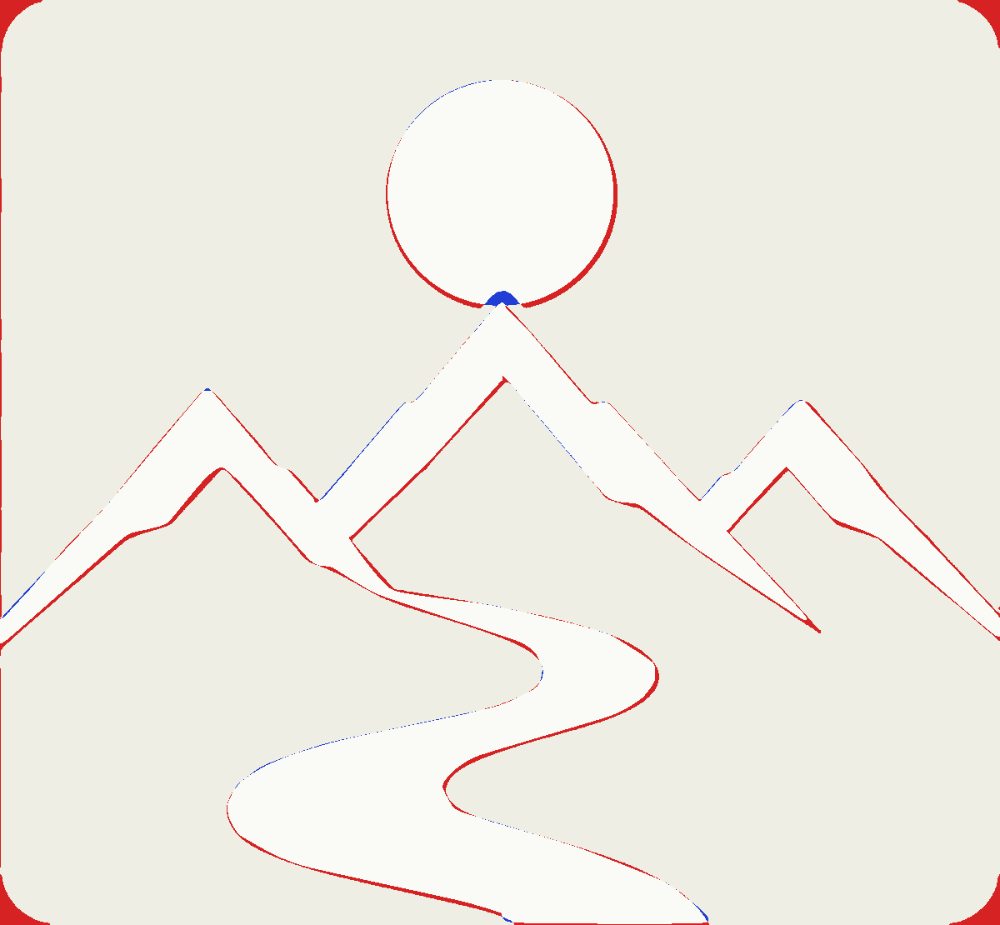
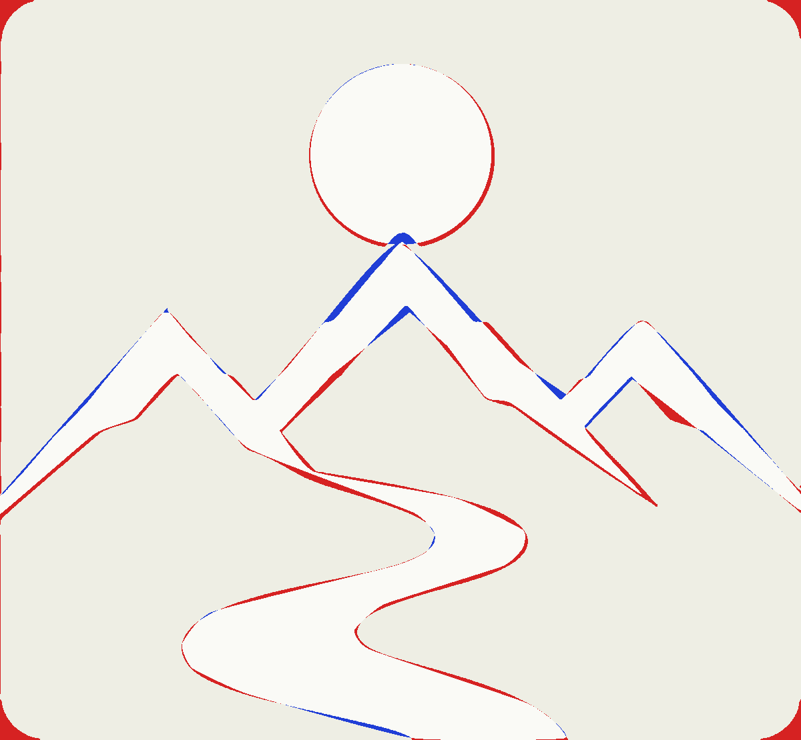
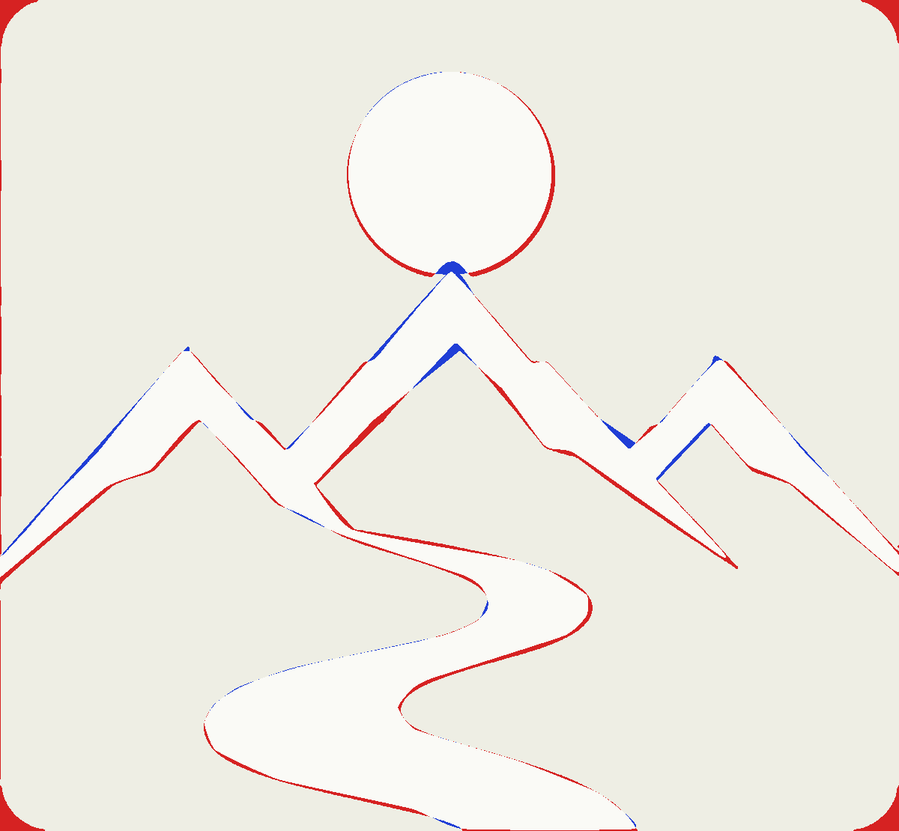

V-01 Sembol — Vektör Aday Karşılaştırması
Seçilen V-01 sembolünün vektör master'ı için üç aday. Kaynak raster üzerinden ölçülerek üretildi; sadece sembol, tipografi veya kelime-mark içermez.
Kaynak
explorations/visual-round-7-seal-variants/seal-v-01/image-1790886610188.png · 1536×1024 raster → sembol kırpıldı: 400×370 px

Ölçülen geometri: güneş cx=200.2 cy=77.1 r=45.1 · sırt stroke=17.0 · kırmızı alan rx=21
Hızlı karşılaştırma


Geometri tanıları
| Aday | IoU | MAE | RMSE | Sapma >32 | Bileşen | Kübik | Stroke | Boyut |
|---|---|---|---|---|---|---|---|---|
| A | 0.9224 | 4.37 | 19.77 | 2.24% | 1 | 91 | 0 | 4.1 kB |
| B | 0.8909 | 5.58 | 24.61 | 2.98% | 1 | 41 | 1 | 2.2 kB |
| C | 0.9094 | 4.89 | 22.04 | 2.57% | 1 | 62 | 1 | 3.1 kB |
IoU = beyaz siluet kesişimi / birleşimi · MAE ve RMSE 0-255 gri tonu · sapma >32, farkı 32 üstü olan piksel oranı. Renk #BD2120, tipografi ve kompozisyon değiştirilmedi.
A Yüksek sadakat kontur izleme
Beyaz şekiller doğrudan kontur olarak alındı, Catmull-Rom ile yumuşatıldı. Güneş ayrıca en-küçük-kare daire olarak çizildi. En yüksek piksel uyumu, ama en fazla düğüm noktası içerir.


B Sadeleştirilmiş Bézier yeniden kurulum
Sırt tek bir polyline stroke olarak, yol sert sadeleştirilmiş kontur olarak kuruldu. En az düğüm, en kolay düzenlenir. Güneşin altında kalan tepe noktası yamaç kesişiminden türetildi.


C Hibrit: fit edilmiş ilkeller + izlenmiş detay
Sırt ölçülmüş kalınlıkta stroke, yol orta detaylı kontur, güneş fit edilmiş daire. A ile B arasında: kontrollü düğüm sayısı, yüksek piksel uyumu.


Yöntem notu
Raster'dan otomatik kenar izleme tek başına yeterli değil: sırt bir dolu siluet değil, ölçülmüş kalınlıkta bir stroke. Otomatik izleme onu dolu kütleye çeviriyor ve kenarlarda basamaklanma bırakıyordu. Bu nedenle önce yapı okundu, sonra geometri ölçüldü (güneş = en küçük kare daire, sırt merkez hattı = bant orta noktası, kalınlık = dikey ölçü / eğim açısı düzeltmesi, güneşin gizlediği tepe = yamaç fit kesişimi), sonra vektör kuruldu.
Görüntü üretimi çağrısı: 0. Tüm adaylar ölçülmüş rasterdan türetilmiştir.